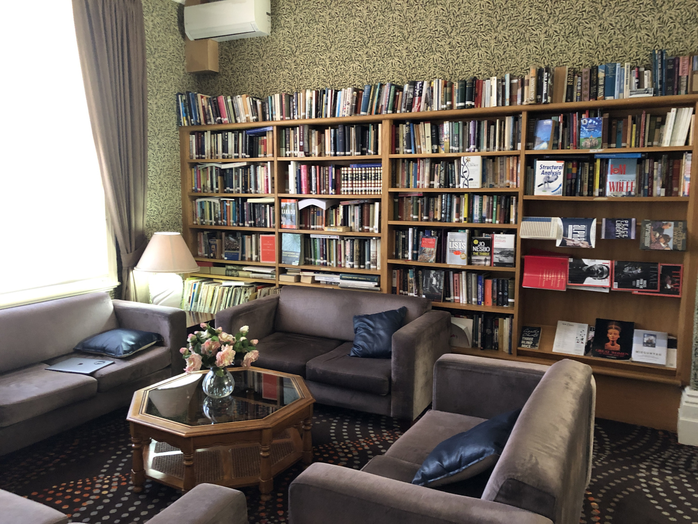
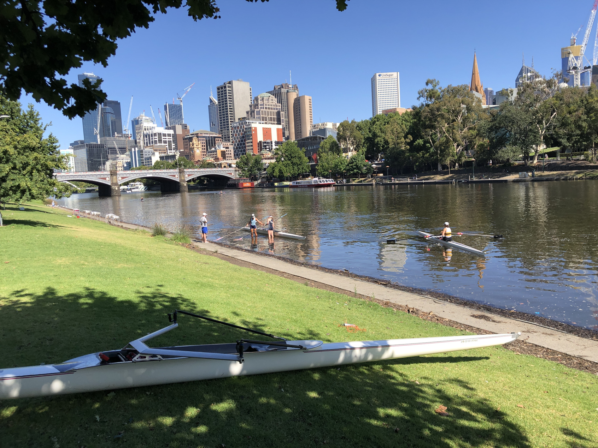
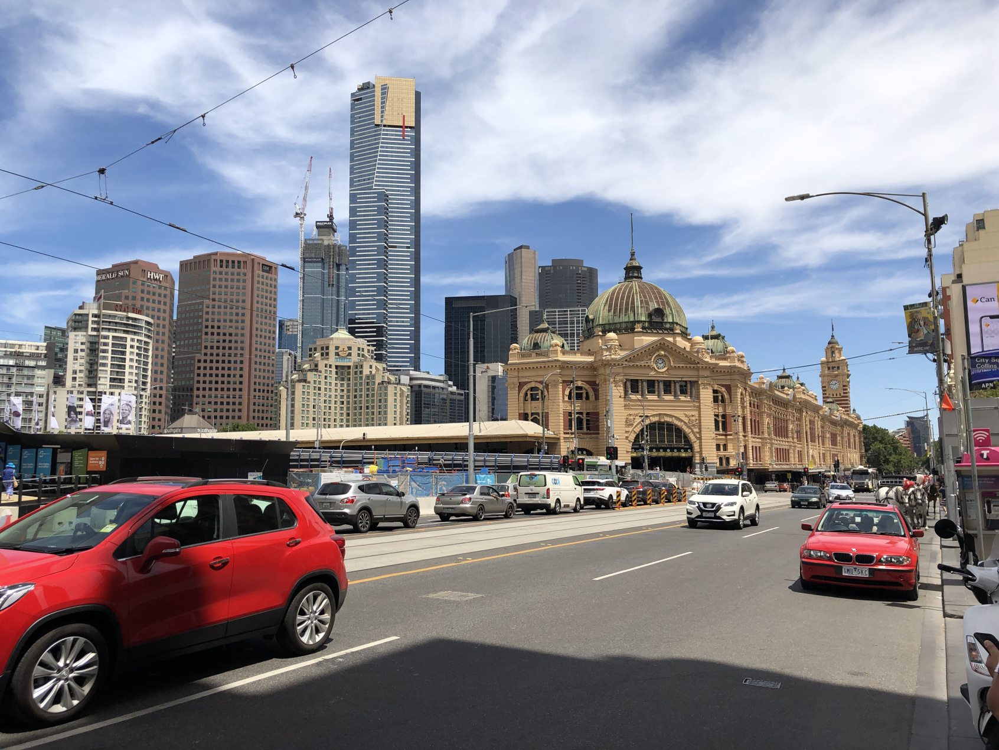
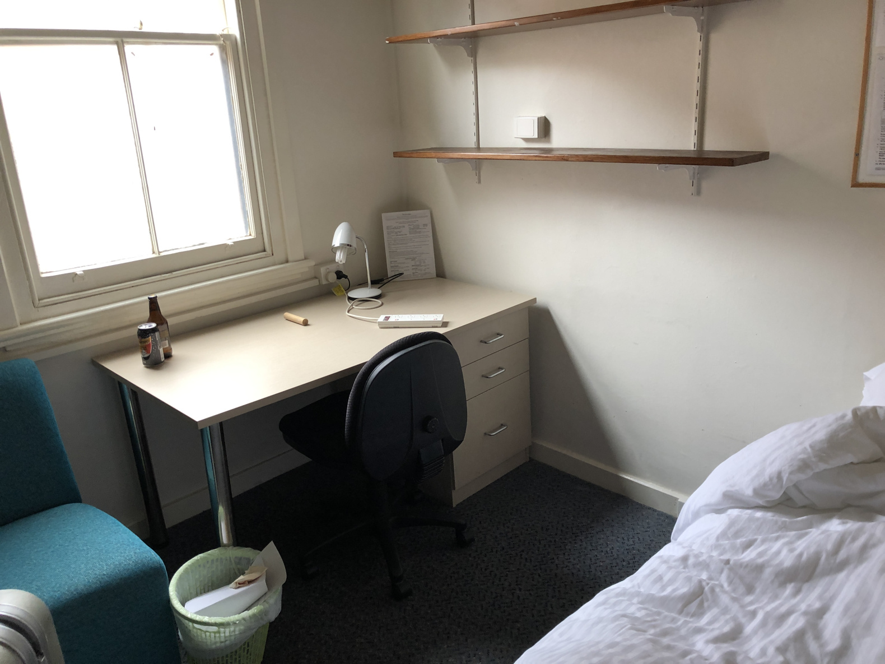
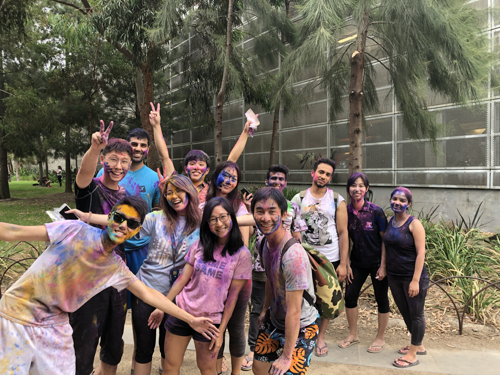
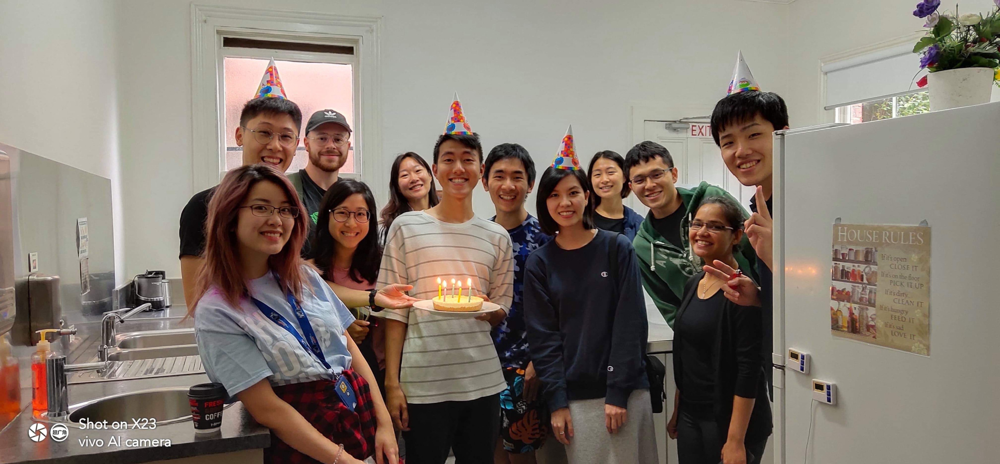

5年次海外実習
Posted by 佐藤, 宮崎 in Tech_archive
1月末から3月中旬までオーストラリアのメルボルンに海外実習に行ってました、５年生の佐藤です。基礎系の研究室に行ったのですが、僕がまだまだ勉強不足なところも多くこれからの勉強のモチベーションにもなりました。

僕の実習内容についてはまだまとまっていないので、去年行った宮崎先輩の資料をもらいました。
海外での生活は旅行も含めて初めてだったので本当に不安でしたが、寮の友達が親切に接してくれて本当に助かりました。ここでその暮らしぶりを少し書かせてもらおうと思います。
英語について
僕を含めて多くの人が海外留学する際に懸念していることかもしれません。IELTSはギリギリ6.0でかつ直前まで英語の勉強をサボっていたので非常に心配でした。なんとかなるかなーと割と楽観的だったのですが、空港でコーヒー頼む時に全然通じなくて絶望しました。
ただ、僕が滞在していた寮は留学生が多く住んでいる寮で英語を母国語としている人はそこまで多くなかったので助かりました。それでも最初は聞き取れませんでしたが、周りの人が割と根気強く伝えようとしてくれたのでありがたかったです。
日本に帰ってからもちゃんと英語勉強します。。。
寮生活について
今回僕は大学内にある寮的なところに滞在しました。朝晩食事付きで週34000円くらいです。オーストラリアにしてはだいぶ良心的ですが、それでも１ヶ月半いるとなるとばかにならないし、行かせてくれた親には超感謝してます。朝晩バイキング形式で食べるので、必然的に他の住人と話すことになるわけですが、結果的にこれがよかったです。用事を作らずとも自然に人と話す機会があるし、色々な人の色々な人生が聞けてすごく楽しいです。ここでたくさんの友達ができました。
部屋も結構快適で落ち着きます。風呂とトイレは共同と聞いていて結構ビビってたんですが、全然不快な感じはなかったです。
寮というものに住んだことがなかったので、とても新鮮でした。
 
メルボルンという町について
ぶっちゃけ日本より住みやすい気がします。気温の年較差は小さく(冬でも10度前後)、日較差は大きいです(今は夏ですが、最低気温18度くらい)。昼間はラボに行っているので、外に出る時は5月くらいの気候で超気持ちいいです。日差しは強いのでオーストラリア来る時は日焼け止め必須です。
メルボルンはアートとスポーツの町です。そこらかしこに美術館や記念館があり、とても全部は行けないほどです。古い建築物が多く残っており、伝統的な西洋建築が立ち並ぶかと思いきや、流線形のドーム状の病院や路地裏にはストリートアート的なものがそこら中に描かれ、それらがいい意味で混じり合い独特の景観を形成しています。
先日全豪オープンが開かれたのもこの町です。ちょうど中之島のように中心地のすぐ近くにヤラ川という川が流れており、ボート競技も盛んに行われていました。
オーストラリアは移民の国で、色々な人種の人たちがいます。だいたい３割がアジア系(中国が最多)、アフリカ系の人も結構います。
 
海外の留学生について
アジア系の人たちが結構多かったです。特に中国はチャイナタウンもあるからなのか、非常に多くの学生が来ています。話を聞いていると、中国の学生の20%くらいの人が海外で修士、あるいは博士を取るらしく、英語は使えて当然のような雰囲気が伺えました。日本は自国の大学や研究機関以外の選択肢があまりないというか、海外に行く人が(少なくとも僕の周りには)少ないので驚きました。当然、speakingやlisteningの能力も程度の差こそあれ、日本人は劣っていると思います。カナダ人から「日本人ってシャイだしあんまり英語も喋れないよねー」って言われて、確かに、、、と納得してしまいました。海外に渡り、技術や知識を取り入れるのがスタンダードになろうとしている他のアジア諸国の人たちを見ていると、日本の将来を考えずにはいられませんでした。
まとめ
海外での生活は予想よりもはるかに楽しかったです。これは寮の友達によるところが大きかったです。毎日誰かが寮のどこかでボードゲームなどで遊んでおり、それを見ているだけでも楽しく、また一緒にやろうぜと気軽に誘ってくれました。休日はみんなで出かけ、それぞれの故郷の料理を交互に食べ、文化について語り合う。考え方は人それぞれなのはもちろん、国や宗教に大きく影響を受けていることを知りました。
旅行ではなかなか味わえないたくさんの貴重な経験をさせてもらいました。
海外に行ってみたい、というミーハーな理由で海外実習を選びましたが、行って本当によかったです。皆さんも是非！！
 